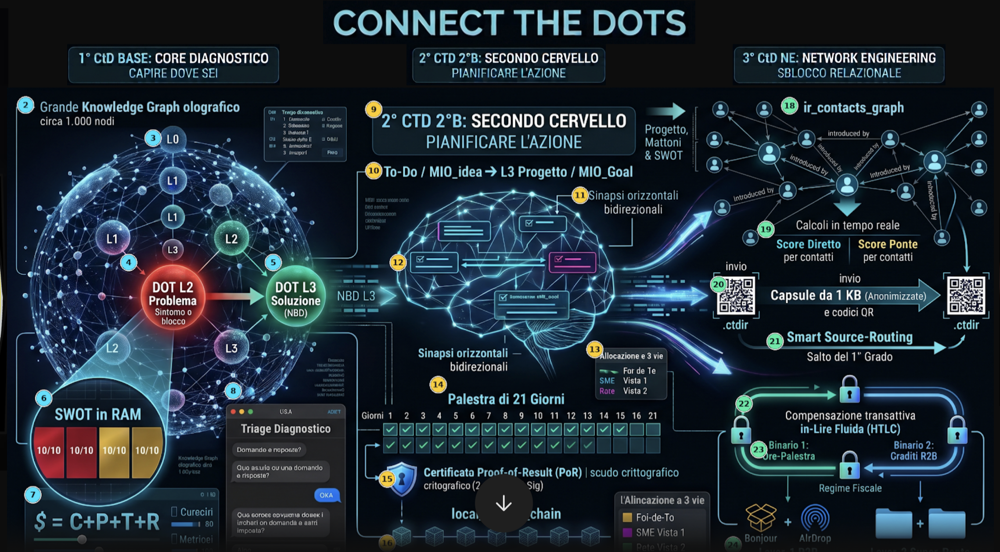

From Any Challenge
To Your Specific Solution.
Your private “intelligent (without artificial, rich in human SME intelligence)” Coach — 3 Systems in 1 Platform for Personas, Professionals, Entrepreneurs, SMEs and Networks.
Harness artificial intelligence without an internet connection, keeping sensitive parameters locked in local encrypted memory to prevent loss of control while delivering fully tailored, hallucination-free decisions.

CPA & Advisory Firm
Scaling tax compliance into strategic management control across 50 clients.
Manufacturing SME
Order contribution margin gap analysis and bottleneck auditing without external advisors.
B2B Network & Associations
Automated member requirement mapping and qualified cross-sector referrals.
The CPA firm executes the complete management audit autonomously for their client company on-device.
Connect the DOTS — 3 Systems in 1 Platform
From causal problem qualification inside your Profilo aggiornato (100% offline) to 21-Day Gym execution, up to Pull-based relational and transactional engineering across the Community of Interest.

Know Where You Are (S = C + P + T + R)
- Private "intelligent (without artificial, rich in human SME intelligence)" Coach: start from the Brain before Synapses or Practice.
- Common "Esperanto" (~1,000 nodes ordered via
sort_order) enabling sustainable, green Relational Intelligence. - Flexible navigation (L0 → L3): start from the Brain or select any L0 horizon directly from Horizons.
- Need qualification (DOT L2 Problem): move from "not knowing what you don't know" to recognizing the parent L2 problem.
- Proliferation mechanism (NBD → NBA → NBM): causal identification of the resolving DOT L3 Solution (L3 Anchor).
- In-RAM SWOT (
_healDatabaseRollups): unknown nodes = Weakness 10/10 & Threat 10/10; Pause button resets to '0' to protect quality time. - 100% offline Profilo aggiornato: metrics beyond revenue, initial Tax Regime gate, AI Anonymization Shield & native GDPR / EU AI Act compliance.
- Non-coercive Diagnostic Triage: transparent guided paths with pre-built options + "Other" ("Altro") with invitation to specify.
Plan Action & Build Real Results (R)
- From theory to practice: empower Individuals, Professionals, and SMEs to own their future without standardizing their goals.
- Project proliferation (To-Do / MIO_Idea → L3 Project / MIO_Goal): turn tasks into structured projects while preserving vertical hierarchy (
parent_uuid). - Bidirectional horizontal synapses (MIEI ↔ MIEI): logical workflow tracking (
evolvedFrom/peerFlowinUserSynapseState). - Concrete L3 Anchor building blocks: break down the practical steps separating current state (P) from target (T).
- Sovereign 3-way allocation: choose per building block between DIY (Gym), View 1 (Provider P&S / Proven SME), View 2 (Personal Network) + "Other".
- 21-Day Gym — Building R & "Umbilical Cord": 21 operational days binding professionals (e.g., BNI chapters) with their best clients.
- Proof-of-Result (PoR) Certificate & "Proven SME" qualification: 2-of-2 Multi-Sig shield; achieving R ≫ qualifies the user to be co-opted (with written consent) onto the L3 Anchor.
- Offline micro-blockchain (
local_source_chain): local tamper-proof SQLite score and certificate integrity at zero server cost.
Pull Relational Engineering & HTLC
- Push-to-Pull revolution: inimitability backed by 50+ years of field experience, 2+ years of AI R&D, and dual patents.
- Relational genealogy (
ir_contacts_graph): tracking "who introduced whom" (introduced by) across Chapters and networks. - Real-time in-RAM scoring: Direct Score (who solves L3 directly) vs Bridge Score (who introduces to the 2nd degree).
- Anonymized 1 KB Capsules,
.ctdir& QR: "On-demand personalized Products / Services / Relationships" wired to each L3 Anchor. - Smart Source-Routing & 1st-Degree Jump: confidential Next Best Match (NBM) without ever exposing 10/10 weaknesses to direct contacts.
- Fluid in-Lire transactional clearing (HTLC): goods, services, and referral exchange acting as a retention & lead-gen engine for existing circuits.
- Dual transactional binary: Binary 1 (Gym-Hours between peers) and Binary 2 (B2B Credits) matched to initial Tax Regime.
- Layer-1 P2P (Bonjour + AirDrop) + Layer-2 Super-Bridge & NEXUS: submission of R ≫ profiles to CtD Admin for verification and Community distribution.